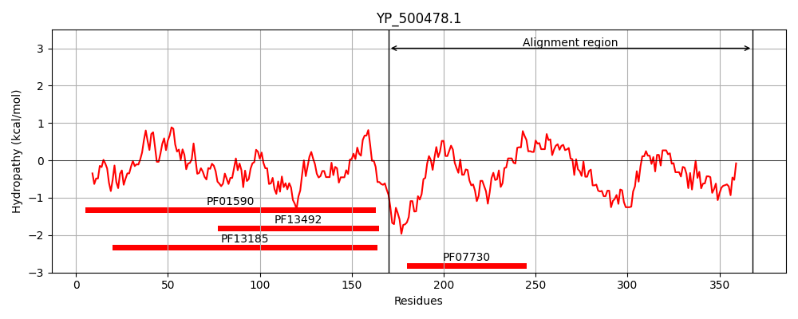
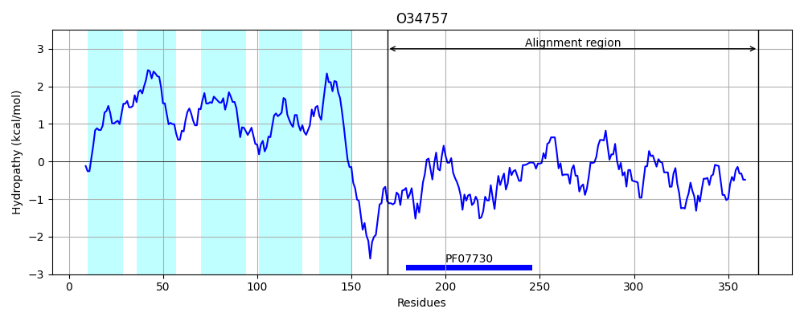
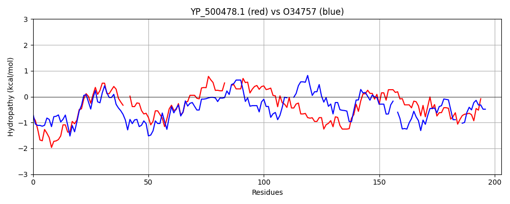

Hit Accession: O34757
Hit TCID: 9.B.238.3.5
Hit Description: gnl|BL_ORD_ID|7150 gnl|TC-DB|O34757|9.B.238.3.5 Sensor histidine kinase DesK OS=Bacillus subtilis (strain 168) OX=224308 GN=desK PE=1 SV=1
Mach Len: 203
e:0.000000
Query TMS Count : 0
Hit TMS Count: 5
TMS-Overlap Score: 0.000000
Predicted Substrates:CHEBI:8526;protein polypeptide chain, CHEBI:2359;ATP
BLAST Alignment:
Score: 182 , Bit scores: 74 bits, E-value: 6.9e-15, Alignment length: 203, Percentage identity: 26
Query: 170 DREKEAAKINERNRLARDLHDSVNQMLFSVKLTAHAAYGM--SNESIAKQAFKTIEETSQNAVNEMRALIWQLKPVGLEQGLIH--ALTAYSKLMHIQLNVNVEGLIDLSNEIEENIYRALQECINNVKKHADTNKMDLTLKQMNDILYIDVIDYGQGFEIDNVQIASSHGINNIKQRVKLLRGKVTFHSQPTKGTQIQFTIP 368
+R E K+ ER R+ARDLHD++ Q L + L + A + + A + K++++T++ ++NE+R ++ +K + L+ LI+ + + +M I I L N E + L+E + NV KH+ + ++Q+ + I V D G F+ + + HG+ +++R++ G + H GT++ IP
Sbjct: 169 ERIAELVKLEERQRIARDLHDTLGQKLSLIGLKSDLARKLIYKDPEQAARELKSVQQTARTSLNEVRKIVSSMKGIRLKDELINIKQILEAADIMFIYEEEKWPENISLLN--ENILSMCLKEAVTNVVKHSQAKTCRVDIQQLWKEVVITVSDDGT-FKGEENSFSKGHGLLGMRERLEFANG--SLHIDTENGTKLTMAIP 366 | Protein Hydropathy Plots: |
|---|
|  |  |
Pairwise Alignment-Hydropathy Plot:
|
|---|
|  |